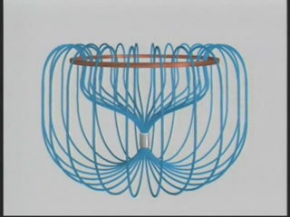
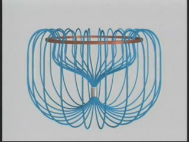

SUBJECT: The Suspended Magnet
DESCRIPTION:
Here we show an example of Faraday's Law, as a magnet is suspended below a copper ring. As the magnet falls under gravity, a current is induced in the ring that tries to keep the magnetic flux through the area of the ring constant. This corresponds to a field that produces a force that opposes the motion of the magnet: as it falls below the ring, the induced current generates a field that pulls the magnet upwards. In this case, since the ring has zero resistance, the flux through it remains constant. In addition, the magnet is light enough that the force from the induced field balances that of gravity, causing it to hang, suspended, below the ring.
The first animation shows the magnetic field configuration around a magnet as it falls and rebounds. The current in the ring is indicated by the small moving spheres. The motions of the field lines are in the direction of the local Poynting flux vector.
The second animation shows a three-dimensional fieldline representation of the same thing.
VISUALIZATIONS: 2D (MPG - 4.1 MB); 3D (WMV)